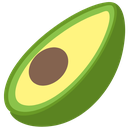

Extra Guac
Twenty tools for the page you're on, in one side panel. We may have gotten carried away.
What's inside
- Screenshota dragged area, the visible part of the tab, or the full page
- Text from imagedrag over any text on screen; it's read and copied
- Privacy blurhides emails, phone numbers and other personal data on screen
- Dark modeon every site, or only the ones you pick
- Refreshhard refresh, or nuke a site's cookies, storage and cache
- Auto-refreshon a fixed or random timer, with an alert when your keywords appear
- URL shortenwith cutt.ly, TinyURL or Dub, copied right away
- Volumeturn down one noisy tab
- Awakekeep the screen on for a set time, or until you say stop
- URL auto redirectrewrite addresses with your own rules
- Highlight wordsneon marks for words you care about, on every site or per site
- Remove elementsclick away clutter; it stays gone on that site
- Clipboard historysearch and pin text you copy on web pages
- Copy & right-clickunlock sites that block them, one site at a time
- Zoom & rotate imageshold a key and scroll over any image
- Save images on clickhold a key and click; save as is, PNG, JPG or WebP
- Upload imagesright-click to upload to ImgLink or x02, link copied
- What color?copy the colour of any pixel on the page
- What font?find the real name of any font on the page
- What element?copy an element's CSS or XPath selector
Privacy
Everything stays in your browser. There are no accounts, no analytics and no server of ours.
Data leaves your browser only when you use a tool that needs an outside service you chose (a link shortener, an image host, text recognition, or a backup to your own Google Drive), and it goes only to that service. Tools that record anything are off until you turn them on. Read the full privacy policy.